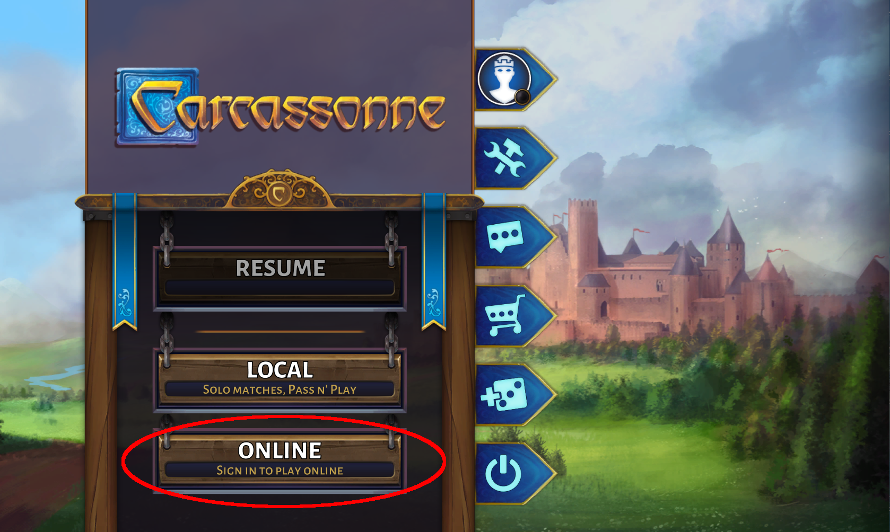
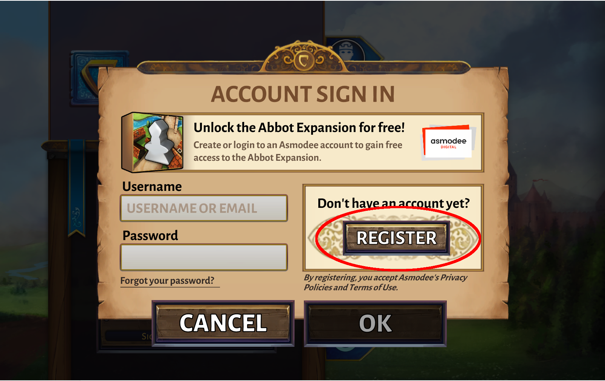
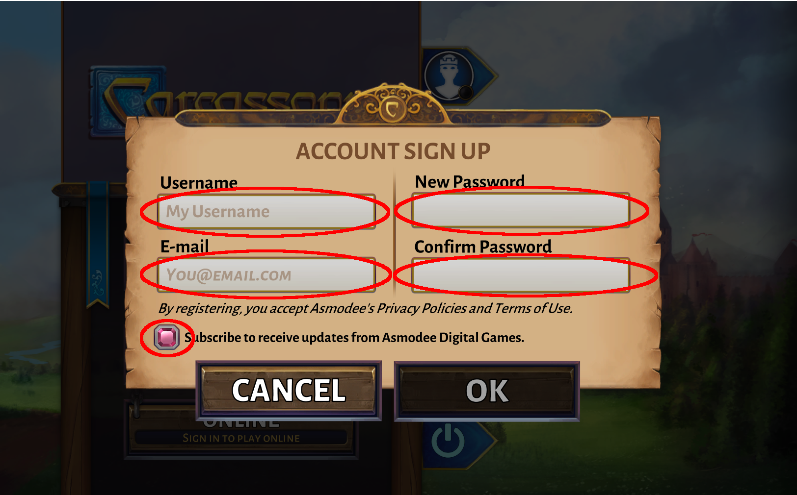
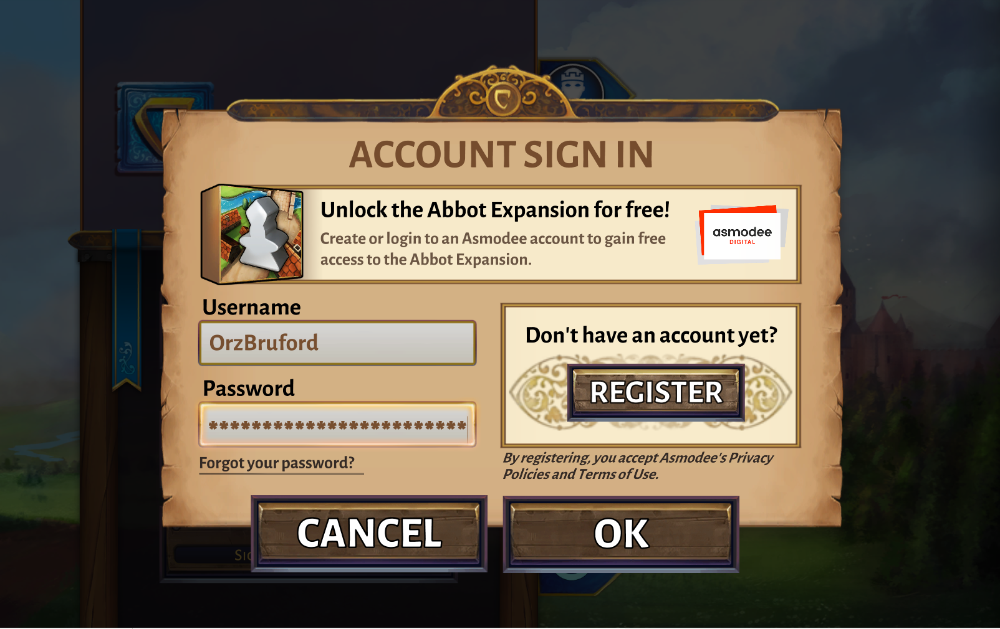
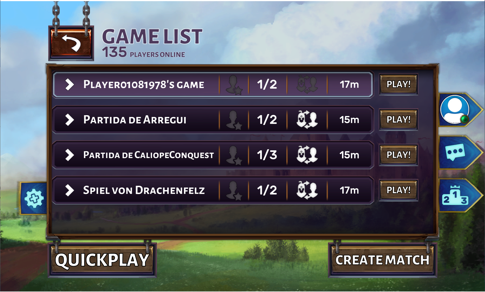
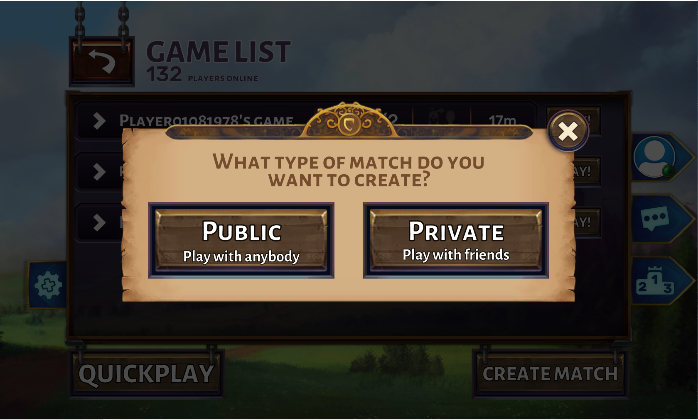

人に口頭で説明するのが大変なのでリファレンスとしてメモしておく。
最初に公式アプリをインストールし、起動する。筆者は Steam 版をインストールしたが、どちらも同じものがインストールされる模様。
リモート対戦のためには Asmodee Digital のアカウントが必要になるが、ゲーム内で登録できる。この稿はそのためのもの。
カルカソンヌを起動すると図のような画面が表示される。
赤丸で囲んだ "ONLINE" ボタンをクリックすると下図のような画面になる。
赤丸で囲った "REGISTER" ボタンをクリックすると下図の画面になる。
Username にユーザー名を、New Password と Comfirm Password にパスワードを、E-mail にはきちんと受け取ることができるメールアドレスを入力し、赤丸で囲んだチェックボックスは On (画面の状態が On の状態) にして、OK ボタンをクリックする。
入力したメールアドレスに本登録の確認メールが来るので、メールに書かれたリンクをクリックして、アカウントを本登録して有効にする。
後は登録したユーザ名とパスワードでログインする。
ログインした状態で "ONLINE" ボタンを押すと、下図のように参加可能なゲームの一覧が表示される。
リストされたゲームから選んで参加しても良いし、"CREATE MATCH" ボタンを押すと、下図のようなゲームクリエイトの画面になる。
ここから先はまだやったことがないので、後に追記する予定。